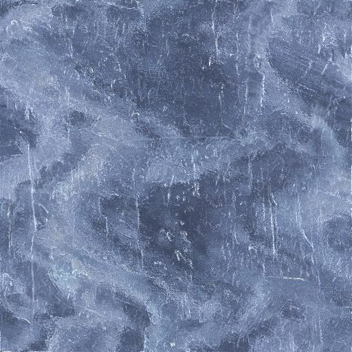

Flying Teapot

In the render() loop, the scene is first rendered in a Frame-buffer object as seen by the light at position
vec3(0, 2, -2). As a color the z-depth value of the fragment is used. Given that
gl.enable(gl.DEPTH_TEST) is used, only the z-depth value of the closest to the light NOT occluded fragment is stored.
In the second on-screen pass of the rendering, the fragment shaders (for the floor and the teapot), use the Model-View matrices of the first pass to transform the fragment coordinates from camera coordinates to light coordinates and calculate the z-depth value (for the light-origin coordinate system) and compare it with the value stored in the previous Frame-buffer object. If the calculated z-depth value of the current fragment is bigger (which means that the current fragment IS occluded by an object closest the light), its rgb color is diminished, simulating a shadowing.